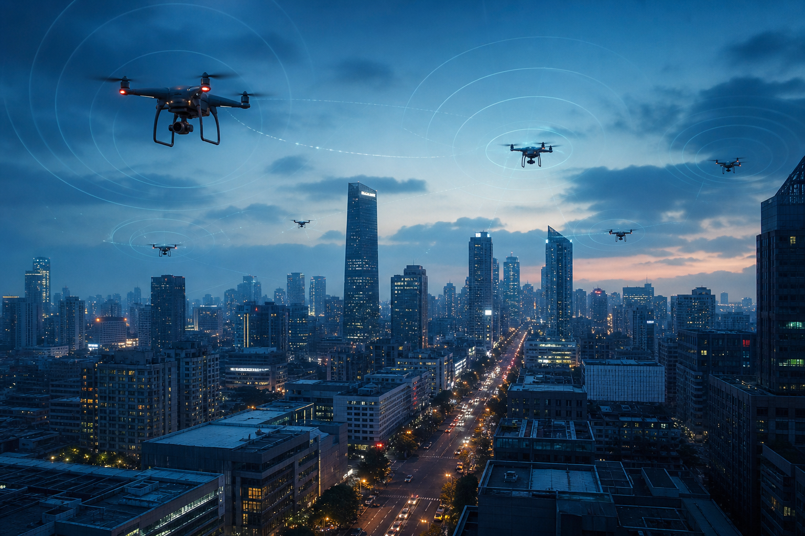
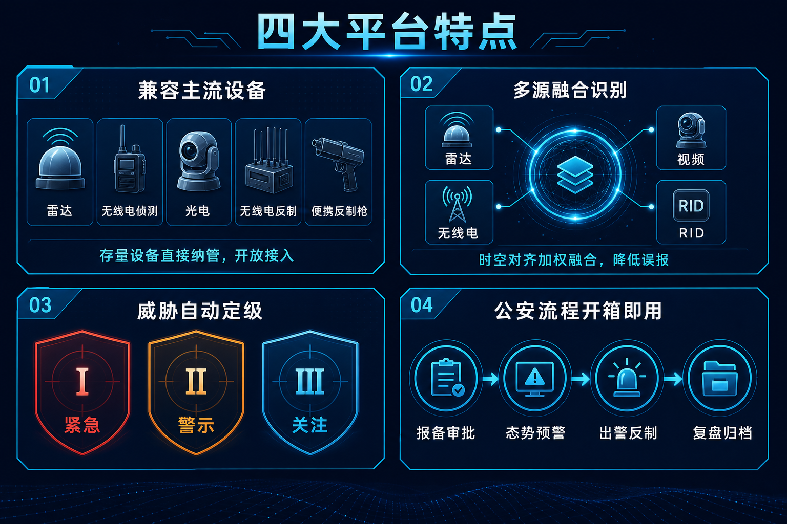

无人机越飞越多，城市低空怎么管？猎场一号面向公安及低空安全管理部门，兼容主流侦测反制设备，打通「察·控·打·评」全闭环，按公安业务流程开箱即用。
城市上空正在变得越来越「忙」。外卖配送、电力巡检、航拍测绘、应急救援，越来越多的无人机进入城市低空。与此同时，未报备的「黑飞」「乱飞」也在增加：闯入机场净空区、飞越大型活动上空、抵近重点设施拍摄，每一类都可能造成严重后果。
对一线管理部门来说，难题很具体——天上有什么，看不全；看到了是谁，说不清；确认有问题，来不及处置。等民警赶到现场，飞手往往已经离开。

01 猎场一号是什么
猎场一号是羽嘉科技面向公安及低空安全管理部门研发的警用低空防务智能实战平台，覆盖城市级低空空域，提供 7×24 小时持续监控能力。
它要解决的不是「买一台设备」的问题，而是把侦测、识别、预警、出警、反制、复盘整个链条串成一套可运转的业务系统——也就是「察 · 控 · 打 · 评」全闭环。
02 四个不太一样的地方
一是兼容主流侦测、反制设备。雷达、无线电侦测、光电、无线电反制、便携反制枪等开放接入，已经采购的存量设备直接纳管，不用推倒重来。
二是多源融合识别「低慢小」。单一手段各有盲区：雷达对低速小目标容易漏、无线电对静默飞行无能为力、光电受天气影响大。猎场一号把雷达、无线电、视频与 RID 做时空对齐加权融合，识别率明显提升，误报大幅下降。
三是威胁等级自动判定。平台结合速度、航迹、区域属性、历史画像与群机协同情况，自动输出 Ⅰ/Ⅱ/Ⅲ 级事件定级，匹配对应处置策略。核心防护区可设无人值守自动处置，一般区域保留人工复核。
四是按公安业务流程设计，开箱即用。预置组织、权限与合规规则，可对接现有警务系统，不需要从零搭建。

03 从发现到处置，四端联动
平台由四端组成：公共服务端负责实名认证、无人机登记、飞行报备与空域查询；后台管理承担审批审核、名单维护与防护区策略配置；指挥中枢大屏提供实时地图、告警定级、事件处置与反制派遣；警用终端完成任务接收、导航到场、核实处置与信息回传。

一次典型的处置是这样的：系统侦测到未报备目标进入重点防护区，自动比对名单与报备记录，定级为 Ⅱ 级事件推送指挥大屏；指挥端一键派单，就近民警的警用终端收到任务与导航；处置完成后信息回传，事件全程留痕，进入复盘归档。
事前合规登记、事中监测处置、事后数据复盘，三段业务在同一个平台里闭环。

04 写在最后
低空经济已写入国家规划，天上的飞行器只会越来越多。管理的思路必须跟上：从人盯屏幕、事后追查的被动应对，转向系统值守、分级处置的主动防控。
这正是猎场一号想做的事。
—— 关于我们 ——
羽嘉科技，城市级低空安全解决方案提供商，
「猎场一号」警用低空防务智能实战平台研发者。
让低空管理从「被动应对」转向「主动防控」。
商务合作：15515738319 ｜ yujiadikongkeji@163.com
免责声明：本文为企业产品介绍，仅供行业交流参考，不构成任何决策依据。